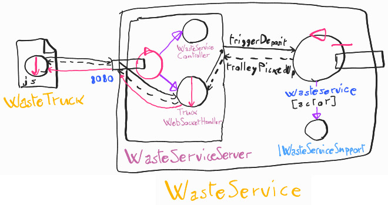
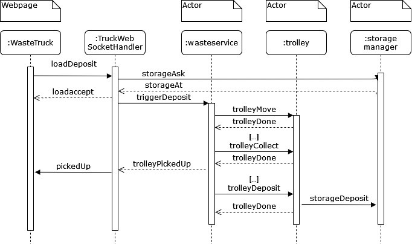
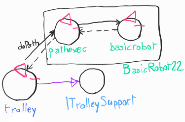
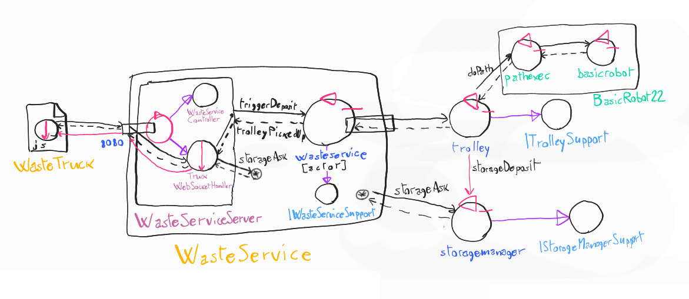

Sprint 1
Indice
Requirements
A company intends to build a WasteService for the separate collection of waste, composed of a set of elements:
-
a service area (rectangular, flat) that includes:
-
an INDOOR port, to enter waste material
-
a PlasticBox container, devoted to store objects made of plastic, upto MAXPB kg of material.
-
a GlassBox container, devoted to store objects made of glass, upto MAXGB kg of material.
The service area is free from internal obstacles, as shown in the following picture:

-
-
a DDR robot working as a transport trolley, that is intially situated in its HOME location. The transport trolley has the form of a square of side length RD.
The transport trolley is used to performa a deposit action that consists in the following phases:
-
pick up a waste-load from a Waste truck located on the INDOOR
-
go from the INDOOR to the proper waste container
-
deposit the waste-load in the container
-
-
a Service-manager (an human being) which supervises the state of the service-area by using a WasteServiceStatusGUI.
-
a Sonar and a Led connected to a RaspnerryPi. The Led is used as a warning devices, according to the following scheme:
-
the Led is off when the transport trolley is at HOME
-
the Led blinks while the transport trolley is moving
-
the Led is on when transport trolley is stopped.
The Sonar is used as an ‘alarm device’: when it measures a distance less that a prefixed value DLIMT, the transport trolley must be stopped. It will be resumed when Sonar detects again a distance higher than DLIMT.
-
TFRequirements
The main goal of the WasteService software is to allow a Waste truck to deposit its load of TruckLoad kg plastic or glass in the proper container.
The global story can be described as follows:
-
The Waste truck driver approaches the INDOOR and sends (using a smart device) a request to store the load, by specifyng the type of the material (plastic or glass) and its TruckLoad.
-
The WasteService sends the answer loadaccept if the final content of proper container will not surpass the maximum value allowed (MAXPB or MAXGB). Otherwise, it sends the answer loadrejecetd and the Waste truck leaves the INDOOR area.
-
When the load is accepted, the transport trolley reaches the INDOOR, picks up the material, goes to the proper container and settles the material. During this activity, the WasteService blinks the Led
-
When the deposit action is terminated, the transport trolley excutes another deposit command (if any) or returns to its HOME.
The WasteService must create a WasteServiceStatusGUI that shows to the Service-manager:
-
the current state of the transport trolley and it position in the room
-
the current weigth of the material stored in the two waste-containers
-
the current state of the Led
Analisi dei Requisiti
Per ogni requisito analizzato in questo SPRINT è stato incluso un modello eseguibile in Qak.
Requisiti e chiarimenti
-
request: il WasteService accetta richieste di deposito da Waste truck che arrivano nella zona specificata come INDOOR, che specificicano il tipo di materiale da depositare
- il sistema può controllare se c'è spazio per un certo materiale: accetta (risposta loadaccept), e rifiuta (risposta loadrejected) le richieste di deposito in caso contrario
-
Domanda: le richieste possono essere gestite anche mentre il robot è in attività?
Sì, potrebbe arrivare altro camion che chiede.
-
Domanda: solo un camion alla volta in INDOOR?
Sì.
-
deposit: il trolley, quando viene attivato, raccoglie i materiali a INDOOR, e li deposita, in base al tipo, in GLASS BOX o PLASTIC BOX; questa è una deposit action:
- Raccolta di rifiuti da Waste truck in INDOOR
- Andare da INDOOR a contenitore rifiuti (* BOX)
- Depositare rifiuti nel contenitore
-
indoor-more-requests: il trolley, terminata una deposit action, torna a HOME solo se non ci sono altre richieste da gestire, sennò gestisce subito la richiesta successiva andando a INDOOR
-
led: nel sistema è presente un led che:
- è acceso se il trolley è a HOME
- lampeggia se il trolley è in attività
- è spento se il trolley è in stato di stop
-
sonar-stop: è presente un sonar che, se misura una distanza sotto DLIMIT (valore prefissato), mette il trolley in stato di stop fino a che la distanza non torna a DLIMIT, nel qual caso il trolley riparte
-
Domanda: cosa vuol dire precisamente stop? Torna a HOME o rimane lì?
Si ferma e basta.
-
-
gui: è presente una gui (WasteServiceStatusGUI) che mostra i seguenti dati:
- Stato del trolley e sua posizione
-
Domanda: Posizione del trolley: deve essere precisa o informazione più generale (INDOOR, in mezzo, HOME, ecc)?
Basta una posizione più generale.
- Carico depositato attuale (in kg)
- Stato del Led (acceso/spento/lampeggiante)
Da questa analisi, emerge che il core business del sistema è costituito dai requisiti di request, deposit, e indoor-more-requests. Un primo sprint SCRUM sarà quindi lo sviluppo a partire da questi requisiti centrali, mentre i successivi sprint implementeranno le funzionalità aggiuntive di led, sonar-stop, e gui.
Glossario
-
WasteService: il servizio centrale che risponde alle richieste dei waste truck
-
Waste truck: i camion che arrivano dall'esterno a depositare rifiuti
-
Area di servizio: INDOOR, PlasticBox, GlassBox, aree definite nella creazione del sistema e punti di riferimento per il trolley. In particolare:
- INDOOR: area dove i waste truck si fermano a lasciare il proprio carico, facendo una richiesta di deposito. Essa può contenere un waste truck alla volta
- PlasticBox: area dove depositare la plastica
- GlassBox: area dove depositare il vetro
-
transport trolley (o trolley): robot DDR (differential drive robot), di dimensione approssimabile a quadrato di lato RD, usato per trasportare i rifiuti nel sistema
-
Service-manager: umano che supervisiona il sistema tramite la WasteServiceStatusGUI
-
Sonar: sensore che misura distanza
-
Led: spia luminosa
Analisi dei requisiti
Guardando i requisiti definiti dal committente si possono fare delle prime analisi sul da farsi.
Analisi request
Si tratta di una domanda con risposta, quindi l'implementazione immediata è request-reply:
Request loadDeposit : loadDeposit(MAT, QNT)
Reply loadaccept : loadaccept()
Reply loadrejected : loadrejected()

Il WasteService deve di conseguenza essere un attore, in grado di ricevere richieste e inviare risposte, e anche inviare messaggi a sua volta alle altre componenti del sistema.
Context ctxwasteservice ip [host="localhost" port=8050]
QActor wasteservice context ctxwasteservice {...}
Viene definito un primo test plan, eseguibile con le classi generate dal modello eseguibile:
Analisi deposit
È presente nel sistema un trolley; visto che necessita di trovarsi in un altro nodo rispetto al WasteService, e di comunicare con esso, viene modellato come un attore: Trolley.
Esso, da requisiti, usa un robot DDR che lavora come trolley. Sono già fornite componenti software che implementano il controllo di un robot DDR tramite operazioni primitive (vedi Materiale fornito dal committente), cioè BasicRobot22. Quindi, il Trolley dovrà interagire con BasicRobot22 tramite i comandi primitivi di quest'ultimo, per controllare il robot DDR.
L'interazione tra Trolley e WasteService riguardante l'innesco e lo svolgimento di una deposit action lascia invece aperte diverse opzioni, che sono discusse successivamente in fase di analisi del problema.
La struttura dell'operazione è descritta nel modello eseguibile seguente:
Viene definito un primo test plan, eseguibile con le classi generate dal modello eseguibile:
Analisi indoor-more-requests
Dal requisito in sè non è possibile formalizzare con più precisione l'interazione precisa interna al sistema che lo adempie, rimanendo punti aperti diversi elementi fondamentali (i tipi di interazione tra componenti del sistema). Viene definito un test plan primitivo in seguito:
Test plan Indoor-More-Requests
Materiale fornito dal committente
- Robot DDR: viene fornita una componente software, BasicRobot22, che implementa comandi primitivi MOVE = w | s | l | r | h, e permette di fare step in avanti per un certo tempo.
- Sonar: viene fornito un programma in C, SonarAlone.c, che stampa su standard output la distanza attualmente rilevata dal sonar, configurando le porte GPIO in questo modo:
- Porta VCC : pin fisico 4 (+5v)
- Porta GND : pin fisico 6 (GND)
- Porta TRIG: pin fisico 11 (WPI 0, BCM 17)
- Porta ECHO: pin fisico 13 (WPI 2, BCM 27)
- Led: vengono forniti gli script bash e led25GpioTurnOn.sh e led25GpioTurnOff.sh per accendere e spegnere un Led connesso alla porta GPIO 25 di un Raspberry Pi.
Scelta del linguaggio di modellazione
Nelle varie fasi di analisi di questo progetto abbiamo usato come linguaggio di modellazione il linguaggio ad attori Qak, essendo il sistema da realizzare un sistema distribuito, quindi adatto ad essere rappresentato tramite attori.
Analisi del problema
Componenti
Data la numerosa quantità di componenti che comunicano tra loro, implementare la logica del sistema come un insieme di attori è abbastanza naturale.
Requisito request - componenti
Il WasteService è rappresentato come già detto in analisi dei requisiti da un attore.
Inoltre, per poter interagire con i cassonetti, sono introdotti degli attori di Storage per comunicare modifiche allo storage e inviare aggiornamenti a componenti di controllo per futuri Sprint.
Anche qua due opzioni possibili:
-
Storage manager centrale: un solo attore che gestisce tutti i cassonetti, tenendo traccia dei contenuti attuali e facendo da unico fronte di comunicazione nel sistema per questi dati. Questo semplificherebbe la comunicazione non richiedendo di distinguere il destinatario in base al materiale, ma richiedendo forse più complessità nel caso, per esempio, in cui i dati di storage siano ricavati da sensori su ogni cassonetto, che quindi dovrebbero aggiornare separatamente lo stesso controllore contenente lo StorageManager.
QActor storage context ctxwasteservice {...}
-
Storage manager separati: un attore per cassonetto (rappresentato nell'esempio sopra), che andrà quindi separatamente interpellato in base al tipo di materiale. La soluzione sarebbe la più intuitiva ma con i problemi sopraelencati.
QActor storage_glass context ctxwasteservice {...} QActor storage_paper context ctxwasteservice {...}
Conclusione. Si è ritenuta migliore la prima opzione, cioè usare un solo componente StorageManager, rendendo più semplice la pianificazione e la progettazione del sistema, a livello di architettura e interazione, oltre a rendere più facile l'espansione (per esempio, aggiungendo altri tipi di cassonetto) tramite configurazione interna al componente, che nel secondo caso richiederebbe la creazione di nuovi componenti.
Requisito deposit - La deposit action
Posizione delle aree di interesse
Da requisiti, si suppone che le posizioni e grandezza delle aree di HOME, INDOOR, e cassonetti vari, siano decise a priori e a priori comunicate al trolley prima dell'inizio del movimento. Riguardo a come questo sia deciso si consulti Configurazione.
Pathfinding
Data una posizione di partenza e di arrivo verso la quale il trolley deve navigare, questo può calcolare due tipi di percorso:
-
Dividendo la stanza in una griglia quadrata di lato RD, il trolley può semplicemente navigare lungo le direzioni cartesiane, prima ad una coordinata della destinazione e poi all'altra.

PRO: si dispone già di componenti in grado di generare e seguire percorsi su griglia in direzioni cartesiane, l'implementazione sarebbe quindi semplice
CONTRO: più lento dell'alternativa.
-
Il trolley compie un percorso diretto a destinazione ignorando la griglia.

PRO: il percorso sarebbe diretto e più veloce.
CONTRO: non disponendo di componenti già implementate per questo scopo, andrebbe programmata la logica di pathfinding e navigazione per questa casistica.
Conclusione. Data la scala ridotta del problema, e la scarsa urgenza di esso, si ritiene migliore la prima opzione, la navigazione cartesiana, che permette di riutilizzare i componenti di navigazione di robot già a disposizione ottimizzando i tempi di sviluppo.
Gestione della deposit action
Esistono più opzioni per quanto riguarda quale componente debba gestire la deposit action:
-
Trolley potrebbe svolgere internamente la gestione dei vari passaggi, ricevendo da WasteService solo le istruzioni per iniziare una deposit action. Questo richiederebbe di spostare la logica di business dentro al Trolley, in parte.
-
Il Trolley potrebbe essere un puro attuatore, offrendo un' "interfaccia" di operazioni primitive, cioè spostarsi verso delle coordinate, caricare i rifiuti (da WasteTruck) e scaricare i rifiuti (nel cassonetto). Il WasteService si occuperebbe di gestire la successione dei passaggi di una deposit action, mentre il Trolley necessiterebbe solo di gestire la sequenza delle operazioni primitive del BasicRobot per raggiungere le posizioni, non conoscendo logica di business.
Conclusione. Per avere una migliore gestione dei dati, e non dividere troppo la logica di business tra nodi diversi, abbiamo deciso per la seconda opzione, trattare il Trolley come attuatore e lasciare a WasteService la gestione dell'azione di deposito. Questo porta a una semplificazione della struttura interna del Trolley, ma al contempo ad una complicazione di WasteService, che deve contemporaneamente gestire richieste e risposte con WasteTruck, e i passaggi della deposit action.
Per una formalizzazione degli stati, si consulti Architettura Logica.
Inoltre, questa modalità permette di assolvere il requisito indoor-more-requests senza richiedere interazioni apposite tra WasteService e Trolley in caso di nuove richieste durante l'operazione precedente; nel primo caso, sarebbe stato necessario far conoscere al Trolley l'arrivo di richieste per permettere di sapere se tornare o meno ad HOME.
Per poter verificare i requisiti, è necessario poter conoscere la posizione del Trolley, in termini di quale luogo di interesse è stato raggiunto. Visto che con questa modalità Trolley non conosce le posizioni delle vare aree di interesse (dato che riceve direttamente comandi per spostarsi a una certa coordinata), è necessario che comunichi a WasteService la sua posizione numerica. Per farlo, in maniera coerente con il metodo di navigazione scelto si divide la stanza in una griglia, con caselle quadrate di lato RD (grandezza del trolley, da requisiti). Le coordinate dei luoghi d'interesse sono così indicate:
- (0,0) è la casella in alto a sinistra della stanza.
- (X, Y) è la casella X caselle a destra, e Y caselle in basso, rispetto a (0,0)
- Un luogo d'interesse copre una o più caselle, ed è delimitato indicando casella in alto a sinistra e casella in basso a destra.
Idee per possibile ottimizzazione
Si è notato infine che, data la staticità dell'ambiente, i percorsi in caso di funzionamento regolare hanno un numero ridotto, essendo sempre tra le stesse (e poche) posizioni. Quindi, se necessario, potrebbe essere possibile precalcolare i percorsi, e riutilizzare sempre gli stessi senza richiedere la generazione ogni volta; nel caso per qualche motivo il trolley si ritrovi in una posizione fuori dalle aspettative, il percorso andrebbe comunque calcolato ad hoc.
Configurazione
Da requisiti, diversi valori, cioè
- DLIMIT
- La posizione di HOME
- La posizione e area di INDOOR
- La posizione e area di GLASS BOX e PLASTIC BOX
sono impostati a priori. Questo può essere realizzato cablando i valori nel codice, ma l'opzione più sensata è quella di usare dei file di configurazione, modificabili dall'utente.
In questo SPRINT, considerando solo il core business dell'applicazione, l'unico componente che necessita di conoscere i dati di configurazione è WasteService. Quindi, il file di configurazione sarà collocato all'interno del suo nodo.
Un esempio:
WasteService.json
{
"positions": {
"HOME": [[0,0], [0,0]],
"INDOOR" : [[0,15], [3,15]],
"GLASS_BOX" : [[13,0], [14,0]],
"PLASTIC_BOX": [[16,4], [16,5]]
},
"DLIMIT": 50
}
Interazione
Requisito request
È necessario che (in caso di loadaccept) il waste truck sappia quando lo scarico dei rifiuti da parte del trolley è stato completato per poter ripartire. Ci sono diverse opzioni:
-
La risposta (loadaccept) potrebbe essere semplicemente inviata solo a scarico completato, a differenza di loadrejected che verrebbe inviata appena possibile. Una volta arrivata la risposta, il camion potrebbe partire. La conseguenza di questo approccio sarebbe l'impossibilità di rilevare errori da parte del Waste truck: "vedrebbe" nella UI un'attesa senza sapere se è per via dello scarico rifiuti in corso oppure per un errore.
-
La risposta (loadaccept) arriva subito come per loadrejected, per informare il Waste truck il prima possibile, e viene inviato un successivo messaggio pickedUp per notificare l'avvenuto scarico e la possibilità di partire. Questo richiede che il Waste truck sia anche in grado di ricevere passivamente messaggi, e non solo inviare richieste e ricevere risposte come da requisiti; è possibile, ma richiede accorgimenti più specifici nello sviluppo.
Dispatch pickedUp : pickedUp()
Conclusione. Si ritiene migliore la seconda opzione, la partenza del camion dopo un dispatch pickedUp: il vantaggio dal punto di vista dell'utente (non necessariamente competente nella tecnologia) nel sapere subito se è stato accettato o meno il carico, e non rimanere bloccati in una schermata di attesa o equivalente anche in caso di successo, vale la pena di avere ulteriori accortezze in implementazione.
Inoltre, WasteService deve poter sapere da StorageManager lo stato attuale di riempimento dei cassonetti.
-
Questo potrebbe essere implementato come una request-reply, chiedendo a StorageManager lo stato dei cassonetti.
Request storageAsk : storageAsk(MAT) Reply storageAt : storageAt(MAT, QNT) -
Potrebbe essere implementato come un evento inviato da StorageManager a ogni modifica dei contenuti, o in modo simile rendendo i cassonetti risorse osservabili.
Event storageUpdate : storageUpdate(MAT, QNT)
Conclusione. Per adempiere a questo requisito si è ritenuta migliore la prima opzione, request-reply; nel secondo caso, WasteService dovrebbe salvare in una variabile interna di stato il dato aggiornato ogni volta che lo riceve, cosa che potrebbe avvenire in qualunque momento, invece di chiederlo semplicemente all'occorrenza.

Modello eseguibile di Request dopo queste considerazioni
Requisito deposit
Il Wasteservice, come specificato in Gestione della deposit action, si occupa dei vari passaggi del deposito. Deve quindi poter inviare messaggi a Trolley per coordinare questa operazione. Deve inoltre sapere quando Trolley termina le operazioni per iniziare le successive.
- Questo potrebbe essere implementato come una serie di dispatch, con un singolo dispatch per le conferme di operazione conclusa.Dispatch trolleyMove : trolleyMove(X, Y) Dispatch trolleyCollect : trolleyCollect(MAT, QNT) Dispatch trolleyDeposit : trolleyDeposit() Dispatch trolleyDone : trolleyDone(OK)
- Oppure, in alternativa, come diverse richieste, a cui Trolley risponde a operazione conclusa:Request trolleyMove : trolleyMove(X, Y) Request trolleyCollect : trolleyCollect(MAT, QNT) Request trolleyDeposit : trolleyDeposit() Reply trolleyDone : trolleyDone(OK)
Conclusione. Si sceglie la seconda opzione, modellare le operazioni primitive come request-response, perchè permette a Trolley di non conoscere WasteService ma di agire solo in risposta a delle richieste.
Inoltre, per iniziare lo scarico nel cassonetto viene comunicato il deposito di un materiale da parte del trolley:
Dispatch storageDeposit : storageDeposit(MAT, QNT)
Questo messaggio viene inviato da Trolley a StorageManager, ed è necessario per trattare allo stesso modo la situazione di test virtuale e il caso reale; infatti, un caso reale potrebbe usare un sensore nei cassonetti per aggiornare i dati sui contenuti noti a StorageManager, mentre in una situazione virtuale questo deve essere necessariamente aggiornato tramite messaggi.
In un caso reale, bisogna quindi testare la consistenza tra dati noti a StorageManager dopo l'invio del messaggio, e i dati reali dei contenuti. Un test plan per questo caso è il seguente:
Test plan per confronto dati veri e gestiti
Il modello per le componenti correlate a deposit è il seguente:

Modello eseguibile di Deposit e Indoor-more-requests dopo queste considerazioni
Architettura Logica
Ecco quindi l'architettura logica finale del sistema in generale per questo SPRINT:


Per scopo di prototipo e simulazione, i Waste truck vengono trattati come attori, ma nel caso reale sarebbero "alieni" al sistema, inviando dati dall'esterno, probabilmente tramite una GUI (web o analoga) usabile dal camionista. Essi, come specificato in Interazione: request, devono comunque disporre di una componente software in grado di rimanere in ascolto di messaggi, oltre che inviare richieste.
Test Plan
Vengono aggiornati i test plan introdotti in analisi dei requisiti, e introdotti di nuovi per collaudare alcuni elementi emersi in questa fase. Tutti i test sul prototipo sono fatti presupponendo l'assenza di un wastetruck che invii indipendentemente richieste che interferirebbero con il test.
Per lo scopo di eseguire il modello Qak senza wastetruck, viene incluso un file pl differente a quello generato che non include il wastetruck tra gli attori: wasteservice_proto_sprint1_test.pl, con un file Kotlin apposito per usarlo.
TestPlan: request
Test plan in Java: TestRequest.java
-
Test Deny: si invia una richiesta di loadDeposit al WasteService per una quantità maggiore di quella che i cassonetti possono ospitare e si verifica che risponda con un loadrejected.
-
Test Accept: si invia una richiesta di loadDeposit al WasteServicee si verifica che risponda con loadrejected.
-
Test PickedUp: si invia una richiesta di loadDeposit al WasteService, usando un finto attore di nome wastetruck
TestPlan: deposit
Test plan in Java: TestDeposit.java
-
Test TrolleyCollect: Invia richiesta trolleyCollect con quantità N e materiale M. Verifica che dopo la richiesta Trolley contenga i materiali corrispondenti.
-
Test TrolleyDeposit: Invia richiesta trolleyDeposit con Trolley già contenente materiale M in quantità M. Verifica che dopo la richiesta Trolley non contenga più materiali, e StorageManager contenga i materiali nelle quantità indicate.
-
Test TrolleyMove: Invia richiesta trolleyMove con coordinate X e Y. Si verifichi tramite Coap che a fine operazione Trolley si trovi alla posizione corrispondente.
-
Test Positions Glass: Invia richiesta di deposito con vetro. Verifica che partendo da HOME, le posizioni attraversate siano HOME, INDOOR, e GLASS_BOX.
-
Test Positions Plastic: Invia richiesta di deposito con plastica. Verifica che partendo da HOME, le posizioni attraversate siano HOME, INDOOR, e PLASTIC_BOX.
-
Test Deposit: Invia richiesta di deposito con quantità N. Verifica che StorageManager finisca con quantità aumentata di N a deposit action terminata.
TestPlan: indoor-more-requests
Test plan in Java: TestMoreRequests.java.
-
Test GoHome: Con Trolley a GLASS_BOX, verifica che in assenza di nuove richieste torni a HOME.
-
Test TrolleyMove: Con Trolley a GLASS_BOX, verifica che in presenza di nuove richieste torni a INDOOR.
Progettazione
La progettazione e lo sviluppo delle componenti software stabilite in fase di analisi è stata divisa in questo modo:
- Trolley, e interazione con BasicRobot: L. Guerra
- Wasteservice (parte relativa a interazione e controllo Trolley): L. Guerra
- Wasteservice (parte relativa a gestione richieste Wastetruck): F. Lenzi
- StorageManager: F. Lenzi
- WasteTruck (ricezione pickUp e GUI): F. Lenzi
È stato possibile dividere facilmente lo sviluppo di WasteService per la struttura che è stata adottata, dettagliata in seguito.
In generale
In fase di progettazione e sviluppo, i vari attori facenti parti del sistema sono stati strutturati come risorsa osservabile COaP, con dati in formato Prolog, sfruttando la libreria QakActor, sia per facilitare l'espansione futura in successivi SPRINT, sia per rendere più facile il testing.
Per esempio Trolley, quando osservato, fornisce questi dati in formato Prolog:
state(work)
pos(X,Y)
{content(MAT,QNT)}
con content opzionale se non trasporta carichi.
Inoltre, ad ogni attore Qak è stat associata una classe Kotlin di support, per ridurre il codice nel file Qak e permettere comportamenti di classe più complessi. Ogni classe implementa un'interfaccia che contiene le proprietà e metodi accessibili dall'attore.
Struttura del software
Il sistema è stato realizzato in linguaggio Kotlin, e parti minori in Java, ed è stato diviso in più progetti:
-
wasteservice.shared: contiene la classe di configurazione
SystemConfig, enumerativi, e utilità comuni alle varie parti del sistema. - wasteservice.core: contiene il core business dell'applicazione, vale a dire WasteService, Trolley, e StorageManager, che è stato implementato in questo SPRINT.
Il software è contenuto nel package it.unibo.lenziguerra.wasteservice, eccetto le classi Kotlin generate da Qak che sono nel percorso attribuito da quel sistema. In particolare i due progetti contengono questi package:
-
wasteservice.shared
- it.unibo.lenziguerra.wasteservice (config e enumerativi)
- it.unibo.lenziguerra.wasteservice.utils
-
wasteservice.core
- it.unibo.lenziguerra.wasteservice.wasteservice
- it.unibo.lenziguerra.wasteservice.trolley
- it.unibo.lenziguerra.wasteservice.storage
-
wasteservice.qak
Per scopo di documentazione, il codice allo stato della fine dello SPRINT 1 è stato copiato in una cartella src-sprint1.
Test
I test plan stabiliti in analisi sono stati adattati al sistema finale dello SPRINT 1, sono eseguibili in questi file:
Note sull'esecuzione:
- È necessario avviare BasicRobot22 prima di eseguire i test, è incluso un file docker per farlo facilmente, con le impostazioni della mappa che seguono il dominio del problema.
- I test vanno avviati un metodo alla volta, ed è necessario aggiornare la pagina di VirtualEnv di BasicRobot tra le esecuzioni, a causa di requisiti di VirtualEnv e Qak.
WasteService
Divisione
È stata presa la decisione di implementare WasteService come due entità software distinte ma interagenti nello stesso nodo:
- WasteServiceServer, un applicazione web realizzata con il framework SpringBoot che espone un interfaccia per i WasteTruck, e gestisce le loro richieste e le relative autorizzazioni.
- WasteService propter, un attore Qak con annessa classe di supporto, che si occupa di gestire l'operazione di deposito coordinando il Trolley che agisce da attuatore come da analisi.
Questo permette di realizzare facilmente l'interazione e l'interfaccia per il WasteTruck, oltre ad avere il vantaggio di disaccoppiare l'operazione di deposito dalla gestione delle richieste: il modello degli stati sviluppato in analisi portava a rispondere a una richiesta arrivata da un WasteTruck solo alla fine di una operazione di deposito. In questo modo, invece, il server è sempre in ascolto di richieste, e in grado di gestirle.
Questo ha inoltre, come effetto secondario, permesso agli sviluppatori di lavorare separatamente alle due parti del progetto (gestione richieste e operazione di deposito)
Richieste
La parte di WasteService che da analisi interagisce con WasteTruck viene implementata come server web: la pagina servita fa le veci dell'attore nel modello di analisi WasteTruck.
Questa pagina contiene script che comunicano con il server di WasteService tramite WebSocket, permettendo sia di inviare richieste e ricevere risposte, sia di ascoltare sulla connessione per la notifica di carico raccolto. WasteTruck diventa quindi, da attore, una pagina web, che viene aperta dal pilota del Waste Truck.
Tramite WebSocket, la pagina del WasteTruck è in grado di rimanere in ascolto per aggiornamenti sulla raccolta del carico, come da analisi (dispatch pickedUp).
Il server, per gestire le richieste, deve chiedere come da analisi informazioni a StorageManager: per farlo agisce da "alieno" al contesto Qak, stabilendo una connessione TCP con il contesto di StorageManager (in questa prima versione, ospitato per demo nello stesso nodo). Chiede al Trolley tramite COaP dati sul suo contenuto attuale, per lo stesso motivo.
L'inizio dell'operazione di deposito viene fatto inviando da "alieno" una richiesta tramite TCP al contesto di WasteService attore ospitato in locale: viene introdotta una nuova richiesta per coordinare le due "metà" di WasteService:
Request triggerDeposit : triggerDeposit(MAT,QNT)
Reply trolleyPickedUp : trolleyPickedUp(_)
WasteServiceServer invia triggerDeposit all'attore per avviare l'operazione di deposito, e riceve trolleyPickedUp per sapere quando inviare pickedUp al WasteTruck come da analisi.
Deposit
WasteService attore è simile al modello dell'analisi. È in grado di stabilire la coordinata più vicina al trolley tra quelle incluse nel rettangolo della area di destinazione, e coordina il Trolley attraverso le varie fasi della deposit action.
Il requisito indoor-more-requests è adempiuto in modo semplice: WasteService attore, per comportamento default di Qak, mette in coda eventuali richieste di triggerDeposit arrivate durante una deposit action, e decide se mandare a HOME o a INDOOR il Trolley a operazione finita in base alla presenza o meno di ulteriori richieste in coda.
L'attore, come detto, è osservabile tramite COaP: la risorsa espone questi dati:
tpos(LOC) // Posizione del trolley in termini di nome ("home", "indoor", ecc.)
{error(ERR)} // Errore (opz.), nel caso il sistema abbia errori
Gestione errori
In caso di errori, cioè, allo stato virtuale del sistema,collisione del Trolley, il sistema si blocca e necessita di una risoluzione manuale del problema seguita da un riavvio. Questo comportamento è stato deciso data l'impossibilità di risolvere dal lato del sistema problemi di questa natura, che in un caso reale sarebbero dati da incidenti fisici nell'area risolvibili solo da un operatore.


Diagramma sintetico delle interazioni di WasteService in caso di richiesta, a scopo esplicativo
Trolley
Per lo spostamento del Trolley, come da analisi, si è pensato di utilizzare il componente software BasicRobot. In particolare, il Trolley interagisce con l'attore pathexec, che permette di svolgere percorsi costituiti da una serie di comandi (w: forward, r: gira a destra, l: gira a sinistra) con una singola interazione request-reply.
Il Trolley agisce, come da analisi, come semplice attuatore. Espone come "interfaccia" la possibilità di inviare richieste trolleyDeposit, trolleyCollect, e trolleyMove. Le risposte inviate dal robot sono state espanse da una singola risposta trolleyDone(OK) da analisi, a due risposte trolleyDone e trolleyFail(REASON), per rendere più semplice la distinzione dei casi in Qak.
Le prime due richieste sono interamente gestite dalla classe di supporto legata al trolley, ITrolleySupport; al momento è implementata per il caso virtuale, ma è facilmente espandibile per un eventuale caso reale.
L'operazione di movimento è come sopra gestita da pathexec: la classe di supporto genera il percorso a partire dalla posizione di partenza e dalle coordinate target, poi Trolley lo invia a pathexec e in caso di successo aggiorna la posizione memorizzata. Essa, infatti, tiene traccia di posizione e direzione attuali del robot.
È stata inoltre aggiunta un'operazione trolleyRotate, per permettere la rotazione senza movimento, usata per tornare rivolti nella posizione iniziale una volta tornati a HOME.
Basicrobot permette di implementare il movimento del robot in modo indipendente dalla tecnologia, il che lo rende un componente utile in fase di testing. Infatti, prima di utilizzare un robot reale, sarà possibile osservare i movimenti del trolley grazie a WEnv.
Come per WasteService, un errore blocca il sistema fino alla risoluzione manuale, per le ragioni già indicate.
Come detto sopra, inoltre, il Trolley è una risorsa COaP osservabile, esponendo questi dati:
state(work) // In questo SPRINT costante, espandibile per includere altri stati (stop, ecc.)
pos(X, Y) // Posizione numerica
{content(MAT, QNT)} // Opzionale, contenuto trasportato

StorageManager
StorageManager, in modo analogo a Trolley, è rappresentato come classe Qak associata a classe Kotlin di support. Come Trolley rimane aperta all'espansione per un ipotetico caso reale.
La risorsa COaP esposta mostra questi dati:
// Per ogni materiale contenuto:
content(MAT, QNT, MAX)
Struttura del sistema
La struttura finale del sistema nello SPRINT 1 è riassunta in questo grafico:

Immagine Docker
Viene fornito wasteservice.yaml per eseguire il sistema con Docker. Ci si può connettere alla porta 8080 per aprire l'interfaccia per i WasteTruck usata per inviare richieste, e alla porta 8090 per visualizzare l'ambiente virtuale del robot.
Riassunto SPRINT 1
Questo primo SPRINT riguardava questi requisiti:
- request: il WasteService accetta richieste di deposito da Waste truck che arrivano nella zona specificata come INDOOR, che specificicano il tipo di materiale da depositare.
- deposit: il trolley, quando viene attivato, raccoglie i materiali a INDOOR, e li deposita, in base al tipo, in GLASS BOX o PLASTIC BOX; questa è una deposit action.
- indoor-more-requests: il trolley, terminata una deposit action, torna a HOME solo se non ci sono altre richieste da gestire, altrimenti gestisce subito la richiesta successiva andando a INDOOR.
Analisi
Dopo la fase di analisi, l'architettura logica del sistema è stata così pensata:
Il sistema è stato pensato per usare la componente esterna BasicRobot22, per semplificare le interazioni con robot reali e virtuali.
Sono stati realizzati, in fase di analisi, dei test plan già eseguibili sfruttando il prototipo in Qak, per ogni requisito. Sono dettagliati nella sezione apposita, e collegati di seguito:
Progetto
I punti salienti della fase di sviluppo sono i seguenti:
-
L'interfaccia per permettere ai WasteTruck è stata realizzata come applicazione web tramite il framework SpringBoot, che comunica con il sistema tramite WebSocket.
-
WasteService è stato realizzato come due componenti distinte e collegate: un server web Spring Boot che fornisce la pagina per fare richieste e le gestisce, e un attore Qak che coordina la deposit action del Trolley.
-
Il Trolley realizza il movimento interagendo con BasicRobot22, in particolare l'attore pathexec. Trolley genera il percorso per la destinazione, e lo invia a quest'ultimo attore.
-
Ogni attore è una risorsa osservabile COaP con dati utili, permettendo più facile testing e futura espandibilità.
I test dell'analisi sono stati adattati all'implementazione:
Note sull'esecuzione:
- È necessario avviare BasicRobot22 prima di eseguire i test, è incluso un file docker per farlo facilmente, con le impostazioni della mappa che seguono il dominio del problema.
- I test vanno avviati un metodo alla volta, ed è necessario aggiornare la pagina di VirtualEnv di BasicRobot tra le esecuzioni, a causa di requisiti di VirtualEnv e Qak.
Viene anche fornita un'immagine Docker per avviare il sistema in modo semplice: wasteservice.yaml.